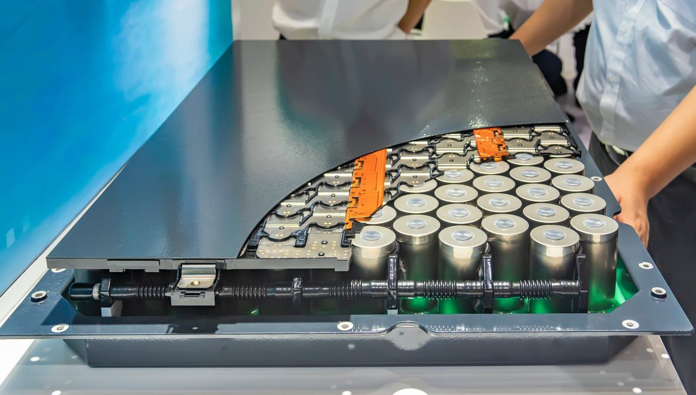
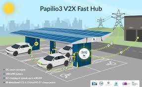
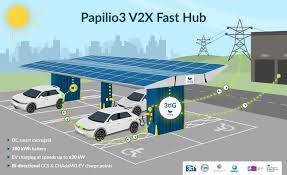
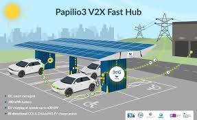
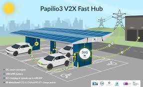

Gallery
Explore real EV battery swapping solutions and designs.

 


Learn how battery swapping can revolutionize electric vehicle infrastructure.
Electric Vehicle (EV) battery swapping is an innovative technology that allows EV owners to quickly replace their depleted batteries with fully charged ones at specialized swap stations. Instead of waiting for hours to recharge a battery, users can simply drive into a station, have the empty battery removed, and a new one inserted in just a few minutes. This approach significantly reduces downtime, making electric vehicles more practical for long-distance travel and commercial use. Battery swapping also helps in efficient energy distribution, supports fleet operations, and reduces pressure on charging infrastructure. As EV adoption grows, battery swapping is emerging as a key solution to speed, convenience, and sustainability in electric mobility.
Battery swapping allows quick replacement of depleted EV batteries with fully charged ones, drastically reducing wait time and enabling 24/7 mobility.
Explore real EV battery swapping solutions and designs.

Test your EV battery swapping knowledge!